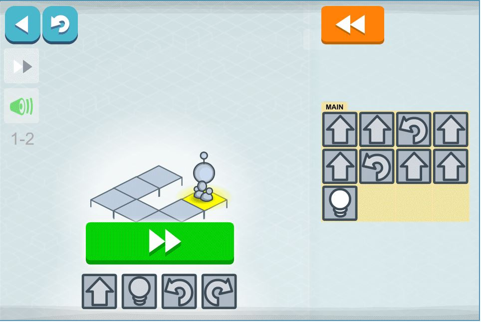
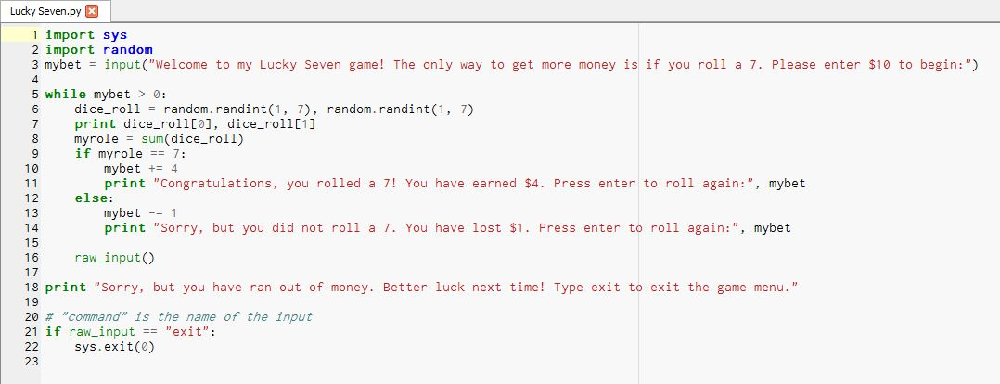
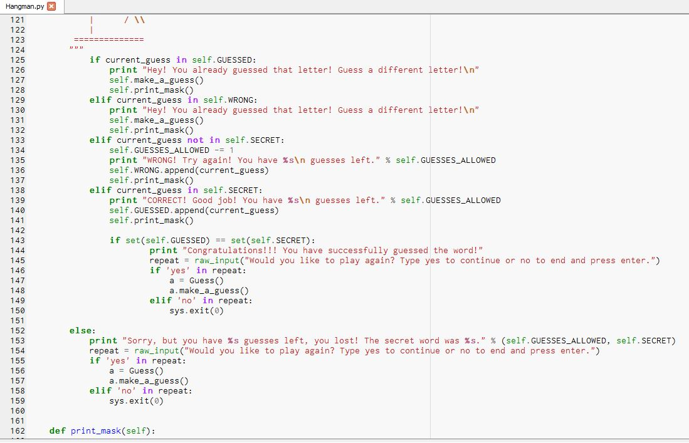
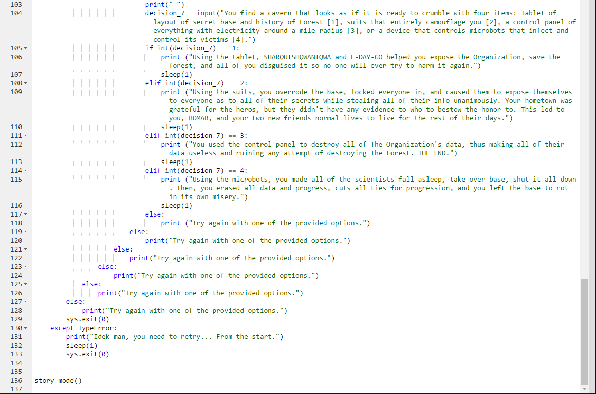

This page is dedicated to everything I have done in my computer science pathway.
Our first project was Lightbot! In Lightbot, we used block code to advance a tiny robot through stages filled with obstacles. Lightbot is a game created under the Hour of Code program. I would reccomend this to beginners with code. I personally enjoyed Lightbot, and I think beginners would to!
 LightbotOur second project was Scratch! In Scratch, we used block code to program games, scenes, and videos. The things makeable in Scratch range from basic learning games to full on games that have multiple things to do in them. The good thing about Scratch is that if you don't know what to create, you can explore projects created by other people and remix those to make them your own!
 Scratch
Scratch
Our third project was App Inventor! In App Inventor, we once again used block code to create apps. Just like Scratch, there is a wide variety of projects that others created that you have access to. A group of three others and I created an app that gave college students ideas for cheap and healthy foods. I think App Inventor would also be good for beginners!
App InventorOur fourth project was Khan Academy! In Khan Academy, we took lessons on html in order to learn how to do stuff like this website! I learned so much throught Khan Academy, and if people take the time to watch the videos and complete the lessons, then they can too! If you have no experience at all with code, I would highly recommened the lessons in Khan Academy, they really do help you!
Khan AcademyOur fifth project was Notepad++! In Notepad++, we used what we learned in Khan Academy and coded webpages using html! I created the ice and index pages using this program. We only used Notepad++ for a while, but I learned a lot from it! We just switched from Notepad++ to GitHub so that we can enhance our websites. I would reccomend Notepad++ to beginners with some experience in html.
Notepad++Our sixth project is GitHub, which is what we are currently working on. GitHub is like Notepad++, but we have much more freedom to do things with what we code. We can do things such as create websites, which is what I am doing right now! Almost everything in this website was made with GitHub! I think that GitHub is a great website for people that would like to learn web development and to get some more practice with their html skills!
GitHubContinuing into the pathway, we began to use a program called Canopy. Canopy is an offline program that allows the user to code using python, a coding language. We have made three games using Canopy, being a guessing the number game, a lucky seven game, and a hangman game. I personally enjoyed making these projects using python.
Our first game that we made is the guessing game. In the guessing game, you have a limited amount of tries to guess the number that is generated. If you get it wrong, then it will tell you if you need to guess higher, or lower.
Our second game that we made is the lucky seven game. In the lucky seven game, you would enter the amount of money you wanted to bet. Once you enter your amount, the game will roll dice and if you do not roll a seven, you will lose $1. If you roll a 7, you will get $4. The game ends then you run out of money.
Our third game that we made is the hangman game. In the hangman game, you have a limited amount of tries to guess the word correctly. There is a list of words that has 20+ words that you can guess. Each time you start a new game, you will get a random word to guess.
After finishing with Canopy, we began to use a new program called Repl.it. Repl.it is similar to canopy, but it can be used online and can be shared with people to be worked on together. Using Repl.it, my partner and I created a interactive fiction story game.

When we used repl.it, we created a story game with partners. In my game, my partner and I created a story that is about the secret of a frozen forest. In my opinion, this is the most fun assignment that we have don all year.
